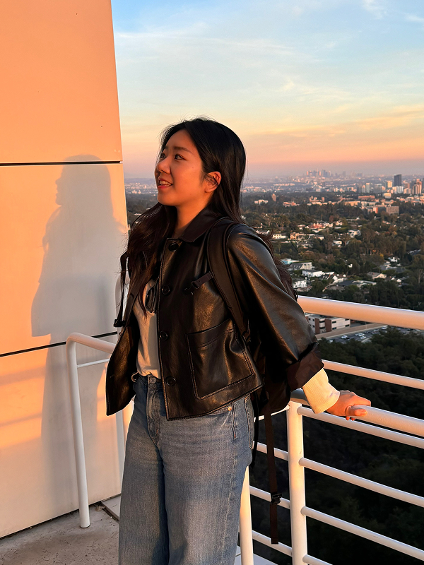

AboutThe best creative isn't the most beautiful.
It's the most strategically inevitable.
I'm a Creative Strategist with 8 years of brand and UX experience across Samsung and Edelman · working at the intersection of audience behavior, creative execution, and AI-native workflows.
At Edelman, I contributed design execution to campaigns reaching 20M+ across Novartis, Hellmann's, and Magnum. On the Magnum ASMR Studio activation, I translated the strategy team's concept into booth, poster, and kiosk UI.
More recently, I owned Winners Big Black Bag end-to-end (46% completion · 25% email opt-in) and now run a self-directed AI-native Reels lab · hypothesis-driven hook engineering with Claude and Meta Edits.
Previously · Cheil Worldwide Pengtai on Samsung.com global redesign (~$1M revenue impact contributed). Red Dot Design Award winner for PTKorea rebranding. 8 years in Seoul, now based in Toronto.